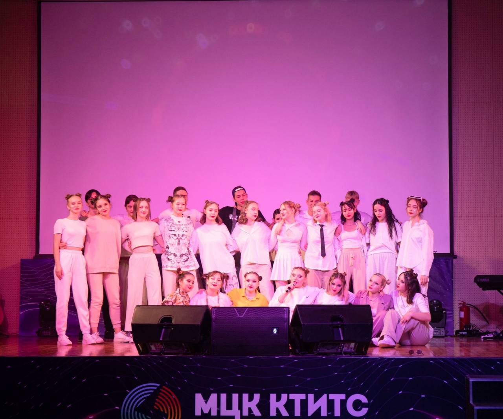
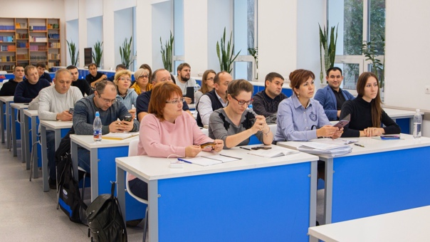

Государственное автономное профессиональное образовательное учреждение
«Международный центр компетенций — Казанский техникум информационных технологий и связи» (ГАПОУ «МЦК-КТИТС»)
МЦК-КТИТС один из крупнейших средних профессиональных учебных заведений в Республике Татарстан.
Для первого приема студентов в техникум 1 марта 1932 года на базе существовавшего
учебно-производственного комбината связи были открыты курсы,
а с 1 октября того же года на базе этих курсов был открыт Казанский электротехникум связи.

Это группа 125-ВЕБ. Они дружная и веселая семья, где каждый готов помочь друг другу.
С первого дня знакомства все поладили друг с другом и поняли, что их ждут счастливые 4 года обучения вместе.
Значимое событие, которое уже произошло в студенческой жизни группы 125, это то, что они одержали победу на мероприятии "День первокурсника".

Преподаватели в МЦК КТИТС очень хорошие!
В группе 125-ВЕБ их всего 13.
Преподаватель, которого группа видит чаще всего - это Гузель Радиковна. Она преподает математику, а также геометрию.
Немного реже встречаются преподаватели по информатике, их всего двое - Лилия Шамильевна и Гульназ Дамировна.
Преподавателя по химии зовут Инна Николаевна, по татарскому языку - Гульчачак Маратовна.
Русский язык и литературу ведет Юлия Валерьевна, а физику и астрономию - Татьяна Николаевна.
Английский язык преподает Нажия Тимирьяновна, историю - Диана Ренатовна, а основы безопасности жизнедеятельности - Лидия Николаевна.
Куратор группы 125-ВЕБ самый лучший. Её зовут Ангелина Руслановна, ей 28 лет и она преподаватель физической культуры.
Вся группа очень любит Ангелину Руслановну. Она готова на многое ради своей группы. Порой, у них бывают разногласия, но без этого никуда.
С 1-го сентября Ангелина Руслановна показалась очень дружелюбной и доброй и это оказалось правдой!
Ей не составит труда найти общий язык со всей группой, с каждым человеком. Она также всегда помогает с организацией мероприятий.
Особенно интересно она проводит кураторские часы. Одно удовольствие ходить на них каждую неделю. Не все смогут так преподносить информацию, как она.
Вся группа очень рада, что им достался такой куратор, и они ее очень любят.!